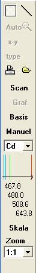
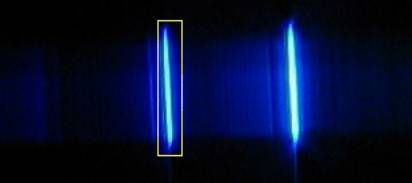
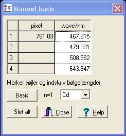
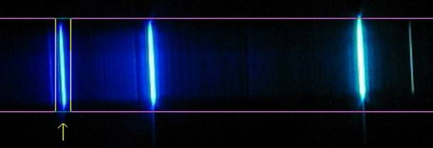
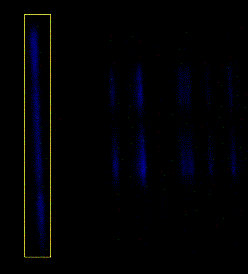

Billeder i JPG-format kan læses af Datalyse og billedet kan analyseres. Når et billede hentet skifter værktøjsmenu, popupmenu og panelet til venstre. Tabellen herunder viser de tilhørende værktøjer.
 |
Afmærk rektangel med musen Autoscale: ikke aktiv i denne menu. Scale x-y: ikke aktiv i denne menu. Typer: ikke aktiv i denne menu. Udskriv, Hent opgave. Scan, scanner spektrum, efterfølgende kan graf vælges. Graf, der skiftes skærmbillede og graf tegnes. Basis, autoscan af basisspektrum, hvorunder bølgelængder beregnes Manuel basis, afmærkning af spektrallinier og beregning af basisspektrum. Basis spektallampe (Cd, He, Hg eller --). Ved manuel basis afmærkes linierne fra venstre. Billedet og bølgelængderne er en hjælp til af finde basislinierne.
Skala, indtegning af bølgelængdeskala, hvis basis er beregnet ellers pixelskala Zoom ud (1:1, 1:2 eller 1:3). |
Et spektrum analyseres i 3 trin: basis, scan og graf:

Spektallampe: Cadmium, Helium eller Kviksølv.
Hvis billedet indeholde et basisspektrum markerer man en linie i basisspektret, som vist på billedet og klikker på basis. Så aflæser Datalyse alle pixels i det markerede bånd, finder spektrallinierne, som er anført i menuen til venstre og omsætter pixels til bølgelængder. Datalyse skriver bølgelængderne i søjle 2 i tabellen. Amplituderne: alle farver, R, G, B skrives også i tabellen. Man skal afmærke én bølgelængde, fordi Datalyse benytter denne til udregning af tiltning, dvs. afvigelse fra lodret.
Hvis basisspektret ikke er cadmium, helium eller kviksølv. Hvis det er skævt (tiltet) eller hvis det er overbelyst eller hvis den automatisk basisberegning af anden grund svigter, kan man vælge manuel basis.
Manuel basis tillader indtastning af spektrallinier og manuelt valg af de tilhørende linier. Man kan afmærke 4 linier og skal mindst afmærke to linier.

Benyttes en kendt basis fx Cadmium, afmærkes linierne med de viste bølgelængder. Benyttes en ukendt basis, skal man indskrive bølgelængderne.
Basis kan udregnes ud fra 2 sæt af (pixel, wave/nm), men det er nøjagtigere med flere værdier.

På billedet ses første afmærkning. Afmærkningerne markeres med pile. Spektret er ikke lodret, men Datalyse beregner afvigelse fra lodret ved første afmærkning. Når de næste linier afmærkes, kan man godt markere uden for det røde bånd. Det ville fx være en god idé ved markering af den grøn-blå linie på billedet.
Man bør du tilstræbe at optage lodrette billeder. Skæve billeder kan eventuelt rettet i et billedbehandlingsprogram.

Afmærk én linie i spektret og klik på scan. Det er vigtigt, at afmærke en linie, for Datalyse beregner tiltning. Dvs. afvigelse fra lodret, således at de beregnede bølgelængder bliver korrekte.
Når Datalyse har scannet hele det vandrette område aktiveres graf-knappen.
Man kan godt skanne før basis, men så mangler omregningen fra pixels til bølgelængde. Man kan afbilde amplitude som funktion af pixelnr. Nu kan man bedre sammenligne spektret med andre spektre.
I Menuen vælges fx alle på y-aksen og wave/nm på x-aksen. Herved fås en graf, som viser spektret beregnet ud fra alle 3 farver.
Zoom ud (1:1, 1:2 eller 1:3)
Et billede fylder let mere en skærmen og man skal scrolle for at se andre dele af billedet. Med zoom kan man se hele billedet. Ved zoom arbejdes der stadigvæk med det fulde billede, men markeringerne med musen på skærmen er mindre nøjagtige. Måske vil den automatiske basisberegning svigte.
Ps. Har man afmærket et område af billedet med musen, kopieret kun dette område ved kopi til klippebordet.